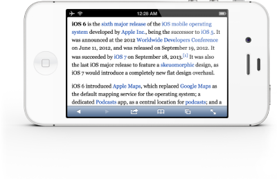

Wikibridges - Wikipedia for unsupported devices

Wikibridges is a tool that bridges the gap between the Wikipedia website and legacy devices due to certificate errors. Wikibridges works via using a cloudflare worker to take the images, text, and links from the offical wikipedia site and then sending it to your device in unencrypted HTTP, preventing any certificate errors. It works as a middleman in the conversation between devices.
Get Wikibridges
Or.. Host Wikibridges yourself
Wikibridges was designed with the idea of self-hosting in mind, which means the code and tools used are adapted to make it very easy and free to host wikibridges yourself! This puts less strain on the servers used to host my copy of Wikibridges, which was made for people who don't understand or want to self-host the tool. This means theres more to go around and makes everybodies life a little bit easier.
Learn how to Self-Host Wikibridges!